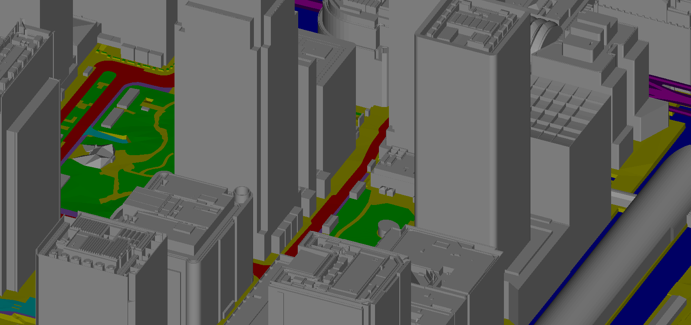
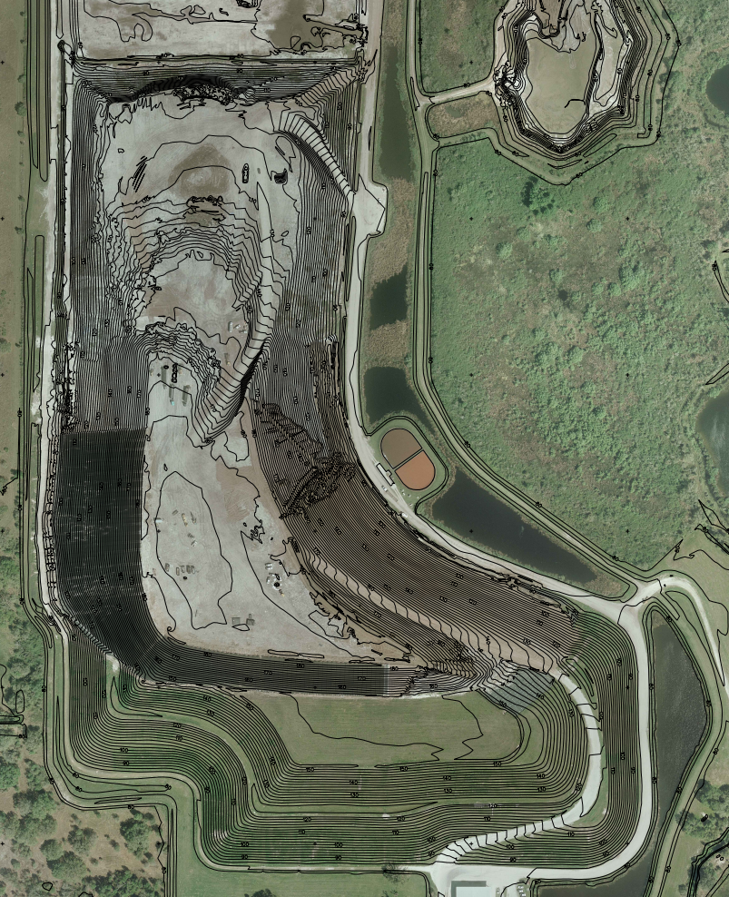

Unlock the power of precise spatial insights with our cutting-edge Digital Photogrammetry services. As a leading player in Geospatial Technology, we specialize in extracting three-dimensional information about objects and landscapes from two-dimensional images captured by cameras, drones, or satellites. Our Digital Photogrammetry solutions amalgamate principles from photography, computer vision, and geometric modeling, delivering accurate and intricate representations of Earth's surface and constructed environments.
Topographic Mapping: Develop precise topographic maps for engineering, land management, and infrastructure planning. Our Digital Photogrammetry ensures accuracy in every detail, supporting your projects with reliable spatial data.


3D City Modeling: Create high-resolution 3D City models, captivating landscapes, and preserve cultural heritage sites for visualization, simulation, and virtual reality applications. Immerse yourself in detailed and realistic representations of urban environments.
Mining and Construction Analysis: Support precise measurement and analysis of stockpiles, terrain profiles, and land surface changes in mining and construction. Our Digital Photogrammetry aids in optimizing operations and enhancing environmental monitoring efforts.
Land Use and Cover Classification: Facilitate land use and land cover classification, change detection, and spatial analysis for urban planning, agriculture, forestry, and environmental conservation. Make informed decisions based on detailed and up-to-date information.
Environmental Monitoring and Resource Management: Contribute to surveying for environmental monitoring and resource management. Provide critical data for assessing habitat quality, monitoring wildlife populations, detecting changes in land use and cover, and mapping natural hazards.
Mining and Construction Analysis: Support precise measurement and analysis of stockpiles, terrain profiles, and land surface changes in mining and construction. Our Digital Photogrammetry aids in optimizing operations and enhancing environmental monitoring efforts.
Land Use and Cover Classification: Facilitate land use and land cover classification, change detection, and spatial analysis for urban planning, agriculture, forestry, and environmental conservation. Make informed decisions based on detailed and up-to-date information.
Key Insights: Digital Photogrammetry assumes a pivotal role in capturing, analyzing, and visualizing spatial information, facilitating precise mapping, modeling, and monitoring of Earth's surface and built environments. As technology continues to evolve, our Digital Photogrammetry services are poised to advance further, presenting new opportunities for innovation and application across diverse industries.